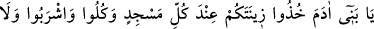
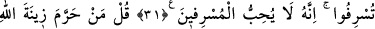
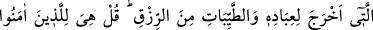
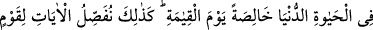
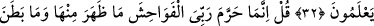
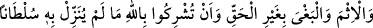
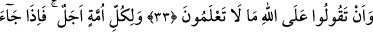
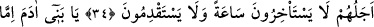
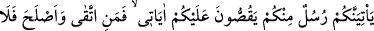
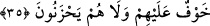

İSRAF ETMEMEK
31. Ey Âdem oğulları! Her mescide gidişinizde süslerinizi güzel elbiselerinizi
giyin; yeyin, için, fakat israf etmeyin; çünkü Allah israf edenleri sevmez.
32. De ki: Allah’ın kulları için yarattığı süsü ve temiz rızıkları kim haram kıldı?
De ki: Onlar, dünya hayatında, özellikle kıyamet gününde mü’minlerindir. İşte
bilen bir topluluk için ayetleri böyle açıklıyoruz.
33. De ki: Rabbim ancak açık ve gizli kötülükleri, günahı ve haksız yere sınır
aşmayı, hakkında hiçbir delil indirmediği bir şeyi, Allah’a ortak koşmanızı ve Allah
hakkında bilmediğiniz şeyleri söylemenizi haram kılmıştır.
34. Her ümmetin bir eceli vardır. Ecelleri gelince ne bir an geri kalırlar ne de bir
an ileri gidebilirler.
35. Ey Âdem oğulları! Size kendi içinizden ayetlerimi anlatacak peygamberler
gelir de kim (onlara karşı gelmekten) sakınır ve kendini ıslah ederse, onlara korku
yoktur ve onlar üzülmeyeceklerdir.
“Ey Âdem oğulları, her mecside gidişinizde süslerinizi (elbiselerinizi) alın”
“Ziynet” (süs), süslenmek için giyilen kıymetli elbiseler için kullanılan bir isim ise de
müfessirler ayetin nüzûl sebebini göz önüne alarak “ziynet”ten maksadın avret yerlerini
örtecek elbise olduğu üzerinde görüş birliğine varmışlardır.
Ayetin nüzûl sebebi şudur:
Câhiliyye devrinde Arab kabileleri, Kâbe’yi çıplak olarak tavaf ederler ve “Biz,